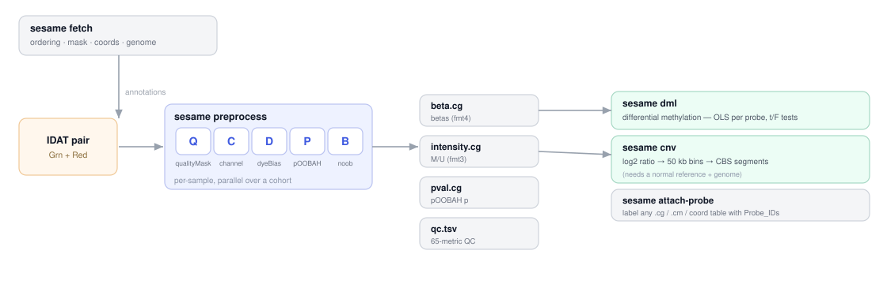
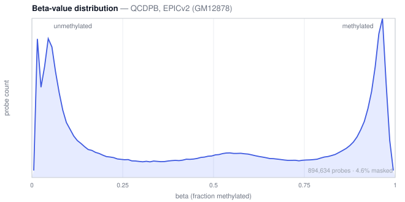

sesame-cli
Infinium DNA-methylation analysis as a single C binary — IDAT → betas → QC, differential methylation, and copy number. No R, no Bioconductor.

What it does
Read IDATs
readIDATpair,
bit-identical to R on 33/33 files (~20.4M records, 9 platforms).
Preprocess
The full QCDPB pipeline
→ betas. prep="" betas are bit-identical to R.
Quality control
The 65-metric sesameQC
panel, one row per sample.
Differential methylation
Per-probe OLS with t/F tests and
BH adjustment — matches R's lm to ~1e-9.
Copy number
log2 ratios vs a normal panel, genome bins, and a deterministic port of DNAcopy's CBS.
Scale
A cohort runs in one process across a thread pool,
streaming to compact YAME .cg files.
Install
# conda (recommended) — installs the `sesame` binary
conda install -c zhou-lab -c conda-forge sesame-cli
# or build from source (C compiler + make; deps zlib, libcurl)
git clone --recurse-submodules https://github.com/zwdzwd/sesame-cli
cd sesame-cli && makeQuickstart
# 1. one-time: fetch a platform's annotation into the store
sesame fetch EPICv2
# 2. preprocess a cohort (default QCDPB) -> indexed .cg per output + qc.tsv
sesame preprocess --out out/ $(ls idats/*_Grn.idat.gz | sed 's/_Grn.idat.gz//')
# -> out/beta.cg out/intensity.cg out/pval.cg out/qc.tsv
# 3a. differential methylation from the betas
sesame dml --betas out/beta.cg --index EPICv2.ordering.tsv.gz \
--meta samples.tsv --formula '~ group + age' > dml.tsv
# 3b. copy number for a tumor sample (CBS segments by default)
sesame fetch genome hg38
sesame preprocess --prep "" --raw-signal --output total_intensity --out t/ tumor
sesame cnv --target t/total_intensity.cg --platform EPICv2 > segments.tsvCopy number, from real data
The cnv command emits per-probe log2 ratios, genome
bins, and CBS segments. Below is actual sesame cnv
output for the K562 leukemia line (EPICv2): the deep chr9p21 (CDKN2A)
deletion, chr13/chr22 amplifications, and arm-level losses — bin cloud plus
segment lines over a whole-genome axis.

sesame cnv, EPICv2 / hg38. Blue = loss, red = gain.Preprocessing, from real data
QCDPB betas show the expected bimodal methylation signature — probes pile up near 0 (unmethylated) and 1 (methylated). Real GM12878 EPICv2 output:

Commands
| command | what it does |
|---|---|
preprocess | IDAT → betas / intensity / pval / qc as YAME .cg (+ qc.tsv), batched over a cohort |
dml | per-probe differential methylation (OLS, t/F tests, BH) |
cnv | copy number — log2 ratios, genome bins, CBS segments |
attach-probe | label a positional .cg/.cm/coord table with Probe_IDs |
fetch | download platform / genome annotation into the store (verified, offline thereafter) |
index-info | store location, pinned tag, and which platforms are present |
idat-dump | inspect a raw .idat |
Full options and the fidelity ladder are in the README and NUMERICS.md.